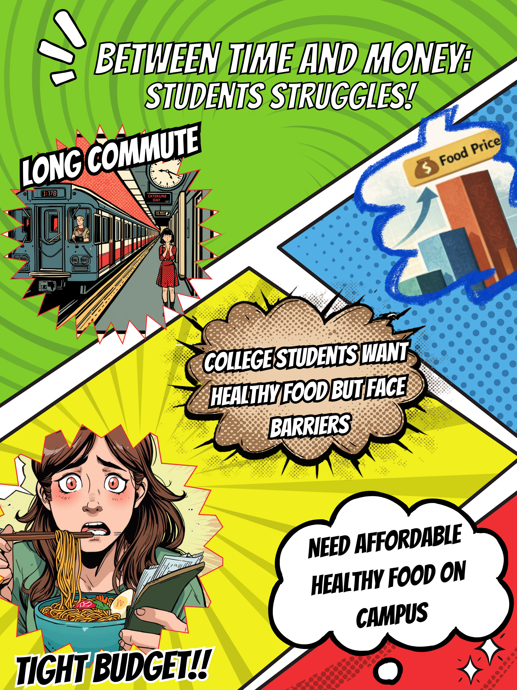
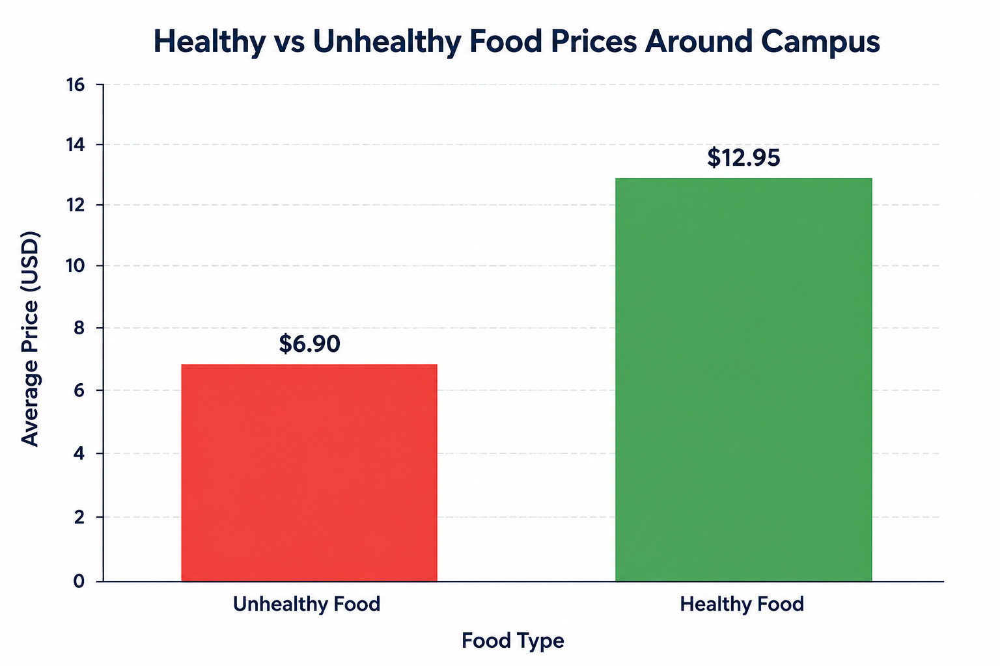
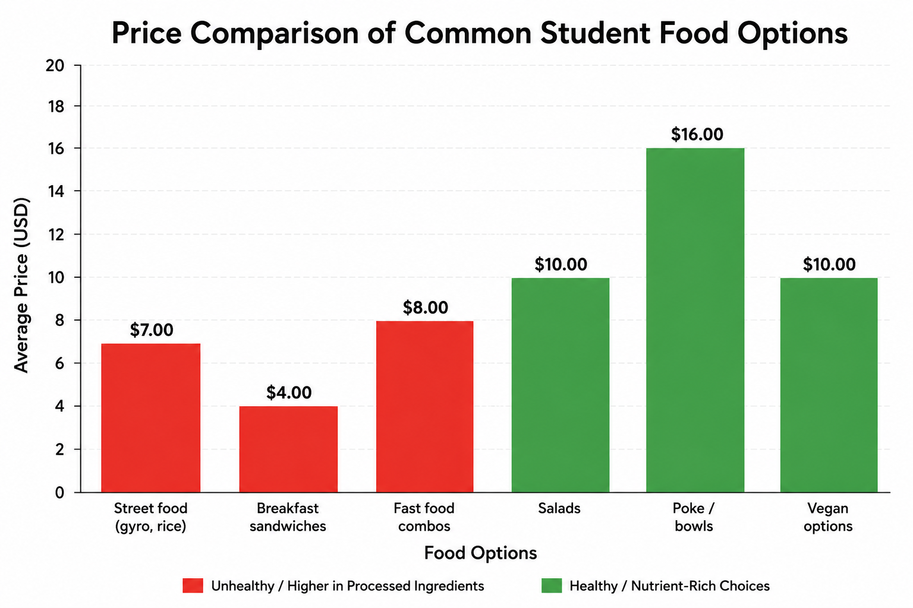
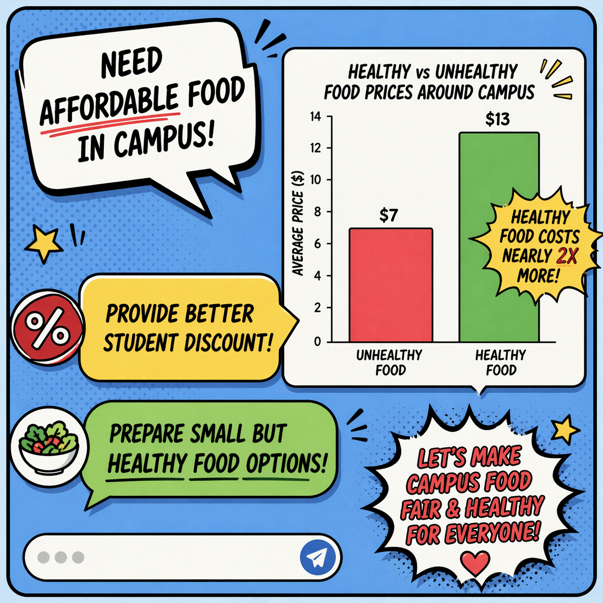
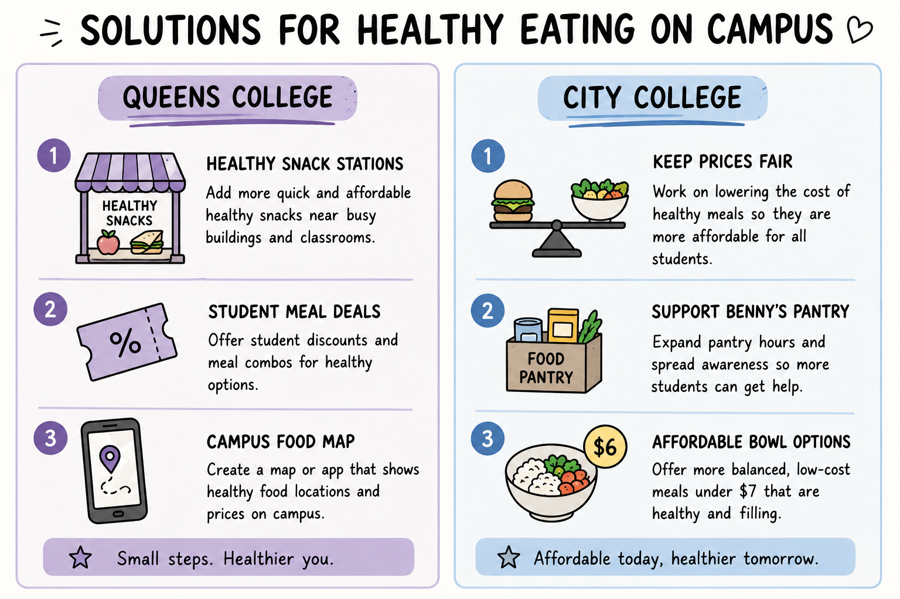

For thousands of college students across New York City, eating healthy is often more difficult than it sounds. Between long class hours, part-time jobs, subway commutes, and rising living expenses, many students are forced to prioritize convenience and affordability over nutrition. While New York City is known for its diverse food culture, access to healthy meals is not always equal across the five boroughs — Manhattan, Brooklyn, Queens, The Bronx, and Staten Island. Students frequently depend on quick meal options such as pizza slices, dollar-menu fast food, halal carts, deli sandwiches, ramen, and campus cafeteria meals. These foods are inexpensive, filling, and easy to access during a busy day. However, healthier alternatives such as salads, fresh fruit bowls, grilled meals, and organic groceries are often significantly more expensive. For students living on limited budgets, spending $15 on a healthy lunch compared to $5 on fast food can make a major difference over time.This research was partially inspired by reporting from Leslie Ravelo in the article “Long Commutes and Tight Budgets: NYC College Students Struggle to Eat Healthy.” The article highlights how long commutes and busy schedules affect Hunter College students’ food choices. One student explained, “When I’m here, I eat unhealthy food. At home, I eat better,” showing how time and access can shape daily eating habits. Chart data and some statistical references used in this project were also influenced by information presented in the article. According to the article, many Hunter College students spend hours commuting to campus every day. Students like Stacy Jean leave home before sunrise and return late at night, leaving little time to cook or prepare balanced meals. Instead, quick food options such as deli sandwiches, pizza, fast food, snacks, or vending machine meals become the most realistic choice during busy school days. Students interviewed in the report explained that healthier meals are often too expensive or inaccessible near campus. Some students even skip meals entirely because affordable healthy food options are limited. For many NYC college students, the decision is not between healthy and unhealthy food — it is between affordable and unaffordable food.


How Location Shapes Student Eating Habits
Location also plays a major role in determining what students eat. In boroughs like Manhattan, healthy restaurants and grocery stores may be more available, but prices are often much higher. Meanwhile, students in areas of The Bronx or parts of Queens may find fewer affordable healthy food options nearby. Some neighborhoods are considered “food deserts,” where fresh produce and nutritious meals are difficult to access within walking distance. Transportation adds another challenge. Many NYC students commute over an hour daily, leaving little time to cook meals at home or search for healthier restaurants. As a result, students often choose whatever food is fastest and closest between classes, work shifts, or train transfers.
Through in-person data collection, clear differences were observed between healthy and unhealthy food options available near Hunter College. The research showed that while healthier meals and food choices are more accessible in Manhattan, the high cost of the area significantly increases food prices. As a result, many students struggle to regularly afford nutritious meals throughout the semester and often rely on cheaper, less healthy alternatives. The findings also highlighted several possible solutions and recommendations that could help reduce these challenges for Hunter College students, which are presented below.

Food Accessibility and Pricing at City College of New York
Recent research and campus dining updates at City College of New York reveal growing concerns about food affordability and student nutrition. Similar to findings at Hunter College, many CCNY students face challenges balancing healthy eating with rising food costs, long academic hours, and financial pressure. While the campus provides multiple dining locations through Elior Collegiate Dining and Dining by Aladdin, healthier food choices continue to remain significantly more expensive than fast and processed meals.Dining spaces such as the NAC Café (The Lodge), Benny’s Café I , and Benny’s Café II mainly serve students looking for quick and convenient meals between classes. Lower-cost foods such as empanadas, fries, pizza slices, and sugary drinks remain the most affordable options on campus, usually ranging between $4.50 and $8.50. In comparison, healthier meals including vegan bowls, salad platters, protein-based dishes, and fresh fruit boxes often range from $11.50 to over $15.00 per meal.
Recent inflation and updated NYC food regulations have further widened the gap between healthy and unhealthy food pricing. Fresh produce and nutritious ingredients have become more expensive over time, while processed bulk ingredients used in fried and carbohydrate-heavy meals remain cheaper for vendors to purchase and sell. This creates a financial imbalance where students trying to eat healthier often spend nearly double the amount compared to students purchasing fast food options.
(CCNY Dining Services)
Research also shows that approximately 40% of CUNY students experience low or very low food security, directly affecting student well-being, concentration, and academic performance. Due to increasing demand, Benny’s Food Pantry at CCNY has moved to an appointment-only system to manage food distribution more effectively. The pantry provides free grains, canned foods, and vegetables grown through the Urban Gardens at City College initiative to help support students facing food insecurity.
Outside campus, students searching for cheaper alternatives along Amsterdam and Convent Avenues are also impacted by rising prices. Traditional halal cart meals that once cost around $6 now commonly range between $8 and $10, while local bodegas have also increased prices on common student meals such as bacon, egg, and cheese sandwiches.
The findings at City College further support the idea that healthy eating among college students is heavily influenced by economic and environmental conditions rather than personal choice alone. Rising food costs, inflation, and limited affordable healthy options continue to shape the eating habits of many CUNY students across New York City.
Student Nutrition at Queens College
Compared to Hunter College and City College of New York, Queens College offers students a wider variety of food choices across campus dining spaces. Students can find halal platters, kosher meals, Korean bento dishes, sandwiches, paninis, and different grab-and-go options throughout the Student Union, Main Dining Hall, and campus kiosks. On the surface, Queens College appears to provide more diversity in meal options than the other campuses researched.
However, despite the larger food variety, the same financial problem continues to appear. Healthier meals remain noticeably more expensive than processed or fast-food options. Students looking for quick and affordable meals still rely heavily on pizza, fries, chips, bagels, or vending machine snacks because they cost significantly less and are easier to access between classes. While a bagel or pizza slice may cost under $5, healthier meals such as protein bowls or halal platters can easily rise above $10 to $14 per meal.
Unlike Hunter College, where commuting pressure was one of the biggest reasons students skipped meals or purchased unhealthy food, Queens College research shows that location and time accessibility inside the campus itself play a larger role. Healthy meal stations are concentrated in limited buildings, meaning students with short breaks often choose unhealthy food simply because it is closer and faster. This creates a different kind of struggle: healthy food exists, but students may not realistically have enough time or money to access it consistently.
Compared to City College, Queens College appears slightly better in terms of food diversity and support systems. Programs like the Knights Table Food Pantry provide students with free groceries, snacks, drinks, and hygiene products, helping reduce food insecurity for some students. However, inflation still impacts the campus heavily. Research shows that healthy ingredients such as fresh vegetables, lean proteins, and fruit have increased in price much faster than processed foods, making balanced meals increasingly difficult for students on limited budgets.
Overall, Queens College demonstrates that having more food options does not automatically solve the issue of healthy eating among students. Although the campus offers greater dietary variety compared to Hunter College and CCNY, students still face many of the same challenges involving affordability, convenience, and time management.Institutional Hurdles at QC and CCNY
Although both Queens College and City College of New York offer students multiple dining locations and food choices, students still struggle to consistently access healthy meals at affordable prices. At Queens College, the major issue is accessibility and time. Healthy meals are available across campus, but many are located in specific dining areas that students may not have enough time to reach during short breaks between classes. Because of this, students often choose nearby fast-food options such as pizza, chips, fries, or bagels simply because they are faster and cheaper.At City College, the struggle is more heavily connected to inflation and food insecurity. Healthy meals such as vegan bowls, fresh fruit boxes, and protein platters are priced significantly higher than fried or processed foods. Rising food prices have widened the gap between healthy and unhealthy options, making balanced meals unrealistic for many students on tight budgets. Even food outside the campus, including halal carts and bodegas, has become increasingly expensive over time. These challenges show that students at both campuses are not avoiding healthy food by choice, but because affordability, time, and convenience heavily shape their daily decisions.

More Than Just Food Choices
Research across Hunter College, City College of New York, and Queens College demonstrates that college students throughout New York City experience different forms of struggle when trying to maintain healthy eating habits. While the campuses differ in location, food variety, and dining systems, the overall problem remains similar: healthy meals are often less affordable, less convenient, and harder to access than unhealthy alternatives.
Hunter College students mainly struggle with long commutes and exhausting schedules that leave little time to prepare meals or search for nutritious food. City College students face severe pricing inflation and increasing food insecurity, where healthier meals can cost nearly double the price of fast-food options. Queens College offers more meal variety compared to the other campuses, but students still face difficulties due to limited healthy food accessibility and high prices.
Overall, this research shows that healthy eating among college students is influenced not only by personal choice, but by larger economic and environmental conditions such as commuting, inflation, time limitations, and food accessibility. Across all three colleges, students continue to prioritize affordability and convenience simply to keep up with the demands of college life.